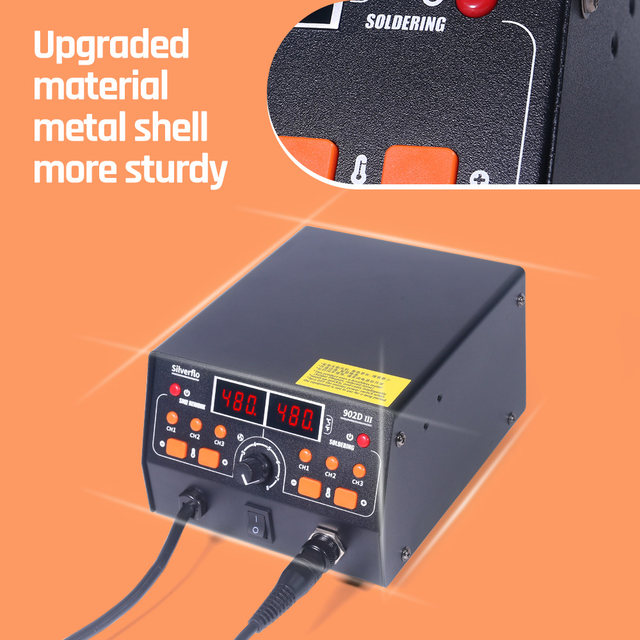
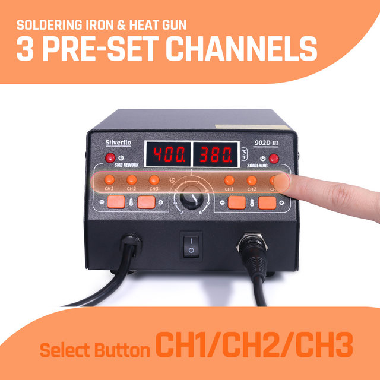
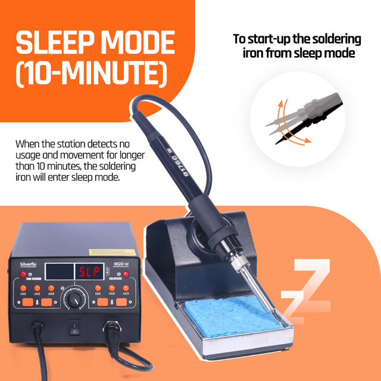
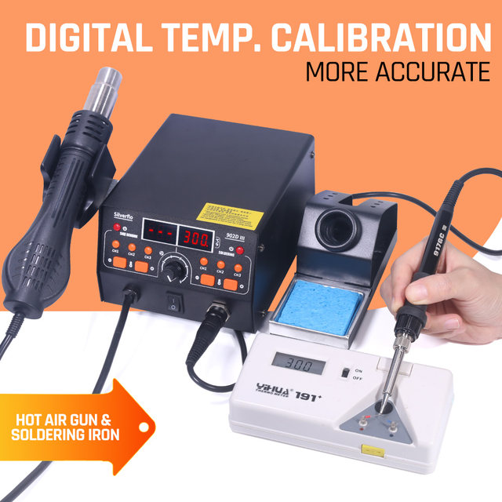
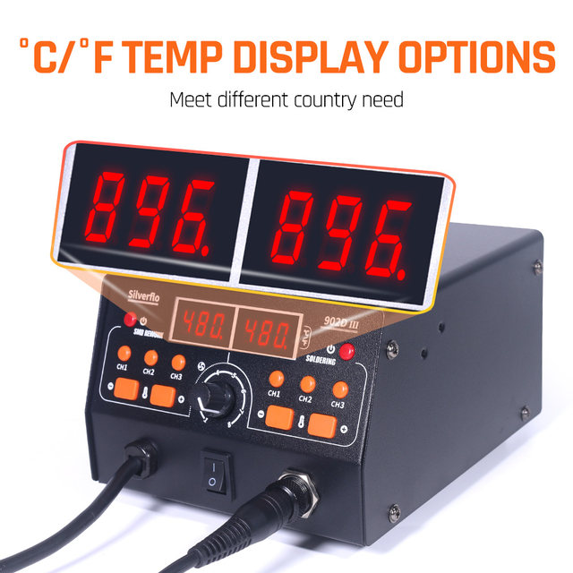
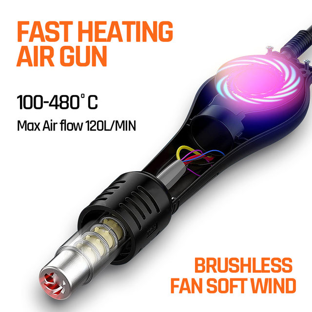

Power supply voltage: 120VUS,220VEU,230VUK,240VAU
Rated power : 750W
Hot air rework station
Air delivery: Brushless fan with smooth air delivery
Temperature Range: 100°C~480°C/212°F-896°F
Wind flow: 30 L/min (max)
Soldering iron
Temperature Range: 200°C~480°C/392°F-896°F
1. Upgraded version.Full Metal Shell Construction:Durable full metal shell , enhancing the station's robustness.
2. The heat gun and soldering iron each have 3 channels of temperature memory storage. Don’t be afraid of complicated welding, this soldering station allows you to easily cope with different temperature requirements.
2. Brushless fan. The air outflow is softer and more uniform, and it is equipped with a spiral air outlet to quickly collect heat. Makes desoldering easier.
3. 10-Min sleep mode. The soldering iron will automatically enter sleep mode after 10-minute-non-operation. Protect your welding station for a longer lifespan.
4. Standby function of the hot air gun.
5. Digital temperature calibration. Make your welding temperature more accurate.
6. ℃/℉ switchable. Choose a display method that better suits your habits.





